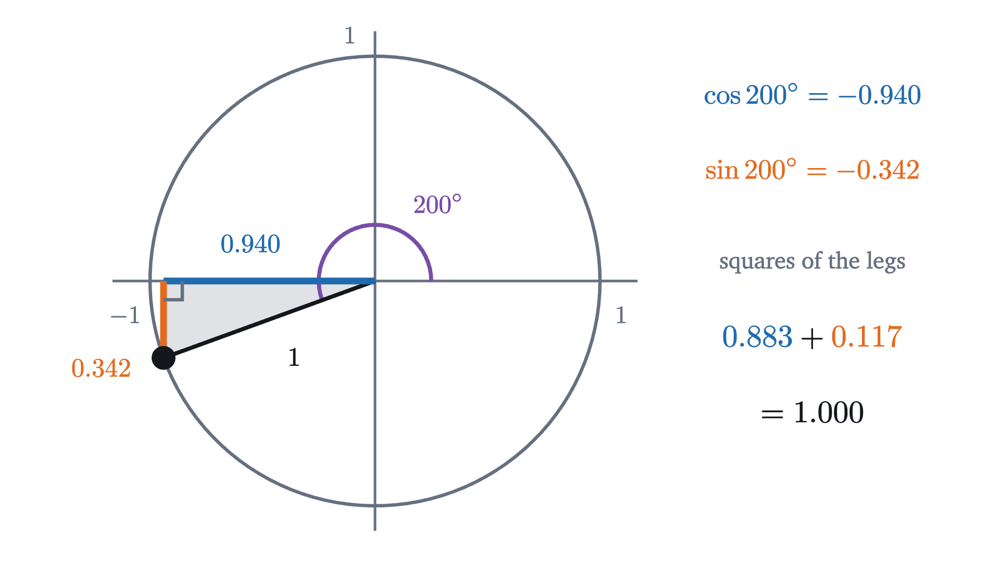
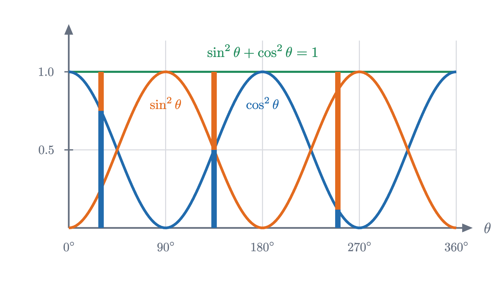
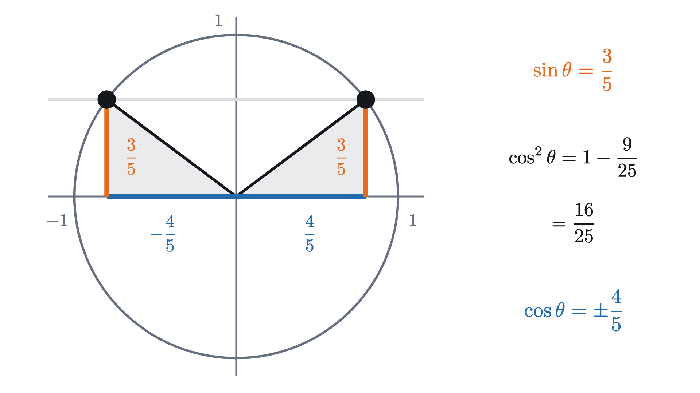
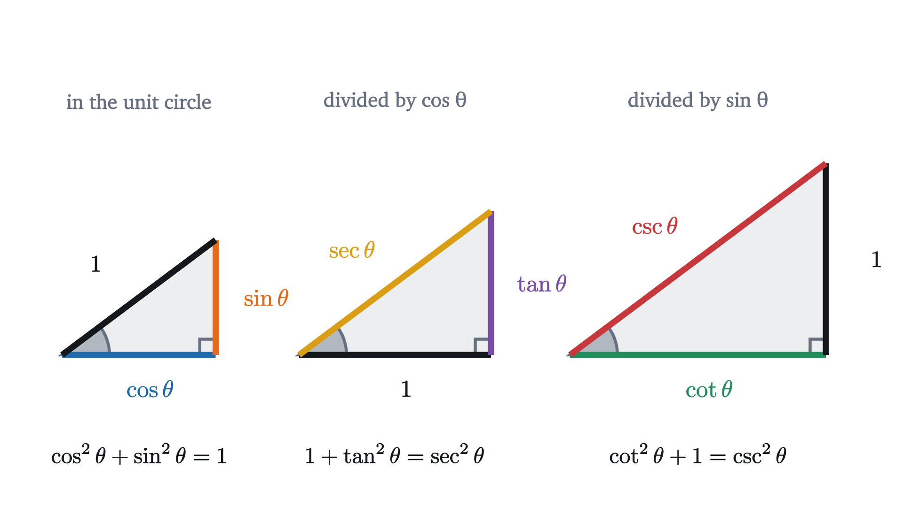

Pythagorean identity: why sin² + cos² = 1
The identity sin²θ + cos²θ = 1 is the Pythagorean theorem on the unit circle. Tangent and secant are lengths in the same picture and give two more.
AssumesThe unit circle: sine and cosine as coordinatesThe Pythagorean theorem: a proof you can seeSimilar triangles and why area grows as the square
Ask a calculator for $\sin 37°$ and $\cos 37°$. It gives $0.6018$ and $0.7986$, two numbers with no obvious connection. Now square each and add: $0.3622 + 0.6378 = 1.0000$. Try an angle from the far side of the circle, 200°: the sine is $-0.3420$, the cosine is $-0.9397$, and the squares are $0.1170$ and $0.8830$, which again add to exactly 1.
It happens for every angle you try. Two functions with complicated decimal values are bound together by one of the simplest equations there is. The reason is a theorem that is at least two and a half thousand years old.
Why the sum is 1
Recall what the two numbers are. On the unit circle, the circle of radius 1 centered at the origin, start at the point $(1, 0)$ and turn about the origin through the angle $\theta$, counterclockwise. The point you reach has coordinates $(\cos\theta, \sin\theta)$: cosine is how far across it is, sine is how far up.
Pause and try
The point $(\cos\theta, \sin\theta)$ is on a circle of radius 1 around the origin. For an angle in the first quadrant, draw the right triangle formed by the radius to the point, the vertical line from the point down to the $x$ axis, and the piece of the axis between. What are its three side lengths, and what does the Pythagorean theorem say about them?
Show answerHide answer
The horizontal leg runs from the origin to the foot of the vertical line, so its length is the point’s $x$ coordinate, $\cos\theta$. The vertical leg has length $\sin\theta$. The hypotenuse is a radius, of length 1. The Pythagorean theorem says the squares of the legs add up to the square of the hypotenuse: $(\cos\theta)^2 + (\sin\theta)^2 = 1^2 = 1$.
That is the whole secret for an acute angle. A good instance to carry through the lesson is the point $(0.8, 0.6)$, which lies on the unit circle because $0.64 + 0.36 = 1$. Its triangle is the 3-4-5 triangle shrunk to hypotenuse 1, with angle $\theta \approx 36.87°$, and for this angle $\cos\theta = 0.8$ and $\sin\theta = 0.6$ exactly.
You might object that the argument used a triangle, and the opening example at 200° has no such triangle with legs $\cos 200°$ and $\sin 200°$: both numbers are negative, and a side cannot have negative length.

The triangle is still there. Its legs have lengths $|\cos\theta|$ and $|\sin\theta|$, the distances of the point from the two axes, and squaring a number gives the same result as squaring its absolute value. So the signs disappear exactly where they would have caused trouble. Only on the axes is there no triangle at all, and there the equation can be checked directly: at the top of the circle the point is $(0, 1)$ and $0^2 + 1^2 = 1$.
There is a cleaner way to say all of this at once. The Pythagorean theorem written in coordinates is the distance formula: the distance from the origin to a point $(x, y)$ is $\sqrt{x^2 + y^2}$. It holds for every point, in every quadrant and on the axes. The identity is the statement that $(\cos\theta, \sin\theta)$ is at distance 1 from the origin.
A word on notation before the formal statement. By long custom $\sin^2\theta$ means $(\sin\theta)^2$, the square of the sine. It does not mean $\sin(\theta^2)$, the sine of the squared angle.
The proof leans on one earlier result, the distance formula, which is the Pythagorean theorem applied to the horizontal and vertical separations of two points and which remains true when one of the separations is zero. “For every real number” is meant literally: negative angles and angles beyond a full turn are included, in degrees or radians.
An equation that holds for every value of its variable is called an identity. That separates it from an equation such as $\sin\theta = \frac{1}{2}$, which is true for some angles and false for others and which one solves. An identity is used differently: as a rule for replacing one expression by another.

One coordinate nearly determines the other
The first use of the identity is to recover one of the two functions from the other without ever finding the angle.

Pause and try
Suppose $\cos\theta = -\frac{5}{13}$ and the point at angle $\theta$ is in the third quadrant. Find $\sin\theta$.
Show answerHide answer
$\sin^2\theta = 1 - \cos^2\theta = 1 - \frac{25}{169} = \frac{144}{169}$, so $\sin\theta = \pm\frac{12}{13}$. In the third quadrant the point is below the $x$ axis, so the sine is negative: $\sin\theta = -\frac{12}{13}$. Check: $\frac{25}{169} + \frac{144}{169} = 1$.
Tangent and secant as lengths
Sine and cosine are lengths in the unit circle picture. Four more functions are built from them by division, and the two met most often are the tangent, $\tan\theta = \frac{\sin\theta}{\cos\theta}$, and the secant, $\sec\theta = \frac{1}{\cos\theta}$. As formulas they look like bookkeeping. Compute them at our running point, though, where $\cos\theta = 0.8$ and $\sin\theta = 0.6$:
The numbers $1$, $0.75$ and $1.25$ are $4$, $3$ and $5$ divided by 4. They are the sides of another right triangle: $1^2 + 0.75^2 = 1 + 0.5625 = 1.5625 = 1.25^2$.
Pause and try
Is that a coincidence of the 3-4-5 triangle? Test another angle: compute $1 + \tan^2 60°$ and $\sec^2 60°$ exactly, using $\sin 60° = \frac{\sqrt 3}{2}$ and $\cos 60° = \frac{1}{2}$.
Show answerHide answer
$\tan 60° = \frac{\sqrt 3 / 2}{1/2} = \sqrt 3$, so $1 + \tan^2 60° = 1 + 3 = 4$. And $\sec 60° = \frac{1}{1/2} = 2$, so $\sec^2 60° = 4$. They agree again, so $1$, $\tan\theta$ and $\sec\theta$ look like the sides of a right triangle for every angle.
If there is a right triangle with sides $1$, $\tan\theta$ and $\sec\theta$, it ought to be somewhere in the picture. Step through the figure to find it, along with a third triangle for the remaining two functions, the cotangent $\cot\theta = \frac{\cos\theta}{\sin\theta}$ and the cosecant $\csc\theta = \frac{1}{\sin\theta}$.
The names come from this picture. A line that touches a circle at one point is a tangent line, and $\tan\theta$ is a length measured along the tangent line at $A$. The line through $O$ and $T$ cuts across the circle, and “secant” comes from the Latin for cutting.
Why are those lengths the quotients we defined? Let $F$ be the foot of the vertical line from $P$. The triangles $OFP$ and $OAT$ both have a right angle (at $F$ and at $A$) and share the angle $\theta$ at $O$. Triangles with the same angles are similar: one is a scaled copy of the other. The horizontal leg grows from $OF = \cos\theta$ to $OA = 1$, so the scale factor is $\frac{1}{\cos\theta}$, and the other two sides grow by the same factor:
The third triangle, $OBC$, has its right angle at $B$. The line $BC$ is parallel to the $x$ axis, so the angle at $C$ equals the angle $\theta$ that the line $OC$ makes with the axis. It is again similar to $OFP$, this time with the side opposite $\theta$ growing from $\sin\theta$ to $OB = 1$. The scale factor is $\frac{1}{\sin\theta}$, which gives $BC = \frac{\cos\theta}{\sin\theta} = \cot\theta$ and $OC = \frac{1}{\sin\theta} = \csc\theta$.

Three similar right triangles give three instances of the Pythagorean theorem. The first is the identity we started with. The second says $1 + \tan^2\theta = \sec^2\theta$, which is the pattern in the numbers $1$, $0.75$, $1.25$. The third says $\cot^2\theta + 1 = \csc^2\theta$.
The picture only covers angles between 0° and 90°, where all six lengths exist as drawn. The algebra has no such restriction. Dividing the sides of a triangle by $\cos\theta$ corresponds to dividing the equation $\sin^2\theta + \cos^2\theta = 1$ by $\cos^2\theta$, and that can be done for any angle at which $\cos\theta$ is not zero.
Outside the first quadrant the same two tangent lines still carry the four functions, as signed positions in place of lengths. The line through $O$ and $P$ consists of the points $(t\cos\theta, t\sin\theta)$, where $t$ is the position along the line measured from $O$, positive on the side of $P$. If $\cos\theta \ne 0$, this line meets the vertical line $x = 1$ where $t\cos\theta = 1$, that is at $t = \sec\theta$, and the point there is $T = (1, \tan\theta)$. So $\tan\theta$ is the height of $T$, negative when $T$ is below the axis, and $\sec\theta$ is the position of $T$ along the line, negative when $T$ and $P$ lie on opposite sides of $O$. At 200°, for example, $P$ is in the third quadrant and the line has to be extended backward through $O$ to reach $x = 1$. It arrives above the axis, at height $\tan 200° \approx 0.364$, and $\sec 200° \approx -1.064$ is negative. In the same way, if $\sin\theta \ne 0$ the line meets $y = 1$ at $C = (\cot\theta, 1)$, at position $t = \csc\theta$. The distances themselves are $OT = |\sec\theta|$ and $OC = |\csc\theta|$.
Working with the identities
Where the identities break down
The first identity never fails. The other two have conditions, and the picture shows what the conditions mean. At $\theta = 90°$ the radius points straight up, parallel to the tangent line at $A$, and never meets it. There is no point $T$, and correspondingly $\cos 90° = 0$, so $\tan 90°$ and $\sec 90°$ are undefined. Just short of 90° the point $T$ is very far up the line: $\tan 89° \approx 57.3$ and $\tan 89.9° \approx 573$. Meanwhile $\sin^2 90° + \cos^2 90° = 1 + 0 = 1$ holds without complaint. Dividing by $\cos^2\theta$ produced a new identity but lost the angles where $\cos\theta = 0$.
The other limit concerns square roots.
Pause and try
A student reasons: “$\sin^2\theta + \cos^2\theta = 1$, so taking square roots, $\sin\theta + \cos\theta = 1$.” Test the conclusion at 37° using the numbers from the start of the lesson. Then find every angle with $0° \le \theta < 360°$ for which $\sin\theta + \cos\theta = 1$ is true. (Square both sides and use the identity.)
Show answerHide answer
At 37° the sum is $0.6018 + 0.7986 = 1.4004$, not 1. To find where it does hold, square: $(\sin\theta + \cos\theta)^2 = \sin^2\theta + 2\sin\theta\cos\theta + \cos^2\theta = 1 + 2\sin\theta\cos\theta$. If $\sin\theta + \cos\theta = 1$ then this equals 1, so $\sin\theta\cos\theta = 0$, which means $\sin\theta = 0$ or $\cos\theta = 0$. The candidates are 0°, 90°, 180° and 270°. Squaring can create false solutions, so test each: at 0° the sum is $0 + 1 = 1$ and at 90° it is $1 + 0 = 1$, but at 180° and 270° it is $-1$. So the equation holds only at 0° and 90°.
Looking back
The opening puzzle was two unrelated-looking decimals whose squares add to 1. The difficulty was only in seeing where to look: once sine and cosine are read as the coordinates of a point on a circle of radius 1, the relation between them is the Pythagorean theorem and nothing more. The step that needed care was the passage beyond the first quadrant, where the triangle’s legs are $|\cos\theta|$ and $|\sin\theta|$ and the squares hide the signs.
The reusable idea is that one geometric fact, seen in similar triangles of different sizes, appears as several formulas that look unrelated on the page. When you meet a new trigonometric identity, ask which triangle it is the Pythagorean theorem for, or which known identity it is after a division. The next lesson, on the angle addition formulas, takes up a question the unit circle does not answer so quickly: what are the sine and cosine of a sum of two angles?
Check yourself
Suppose $\sin\theta = 0.6$ and the point at angle $\theta$ lies in the second quadrant. What is $\cos\theta$?
Problems
Problem 1
Given $\cos\theta = 0.28$ with $\theta$ in the fourth quadrant, find $\sin\theta$.
Show solutionHide solution
$\sin^2\theta = 1 - 0.28^2 = 1 - 0.0784 = 0.9216$, and $0.9216 = 0.96^2$, so $\sin\theta = \pm 0.96$. In the fourth quadrant the point is below the $x$ axis, so $\sin\theta = -0.96$. Check: $0.0784 + 0.9216 = 1$.
Problem 2
Given $\sin\theta = -\frac{5}{13}$ with $\theta$ in the third quadrant, find $\cos\theta$, $\tan\theta$ and $\sec\theta$.
Show solutionHide solution
$\cos^2\theta = 1 - \frac{25}{169} = \frac{144}{169}$, so $\cos\theta = \pm\frac{12}{13}$, and the third quadrant makes it negative: $\cos\theta = -\frac{12}{13}$. Then $\tan\theta = \frac{-5/13}{-12/13} = \frac{5}{12}$ and $\sec\theta = \frac{1}{\cos\theta} = -\frac{13}{12}$. Check with the second identity: $1 + \frac{25}{144} = \frac{169}{144} = \left(-\frac{13}{12}\right)^2$.
Problem 3
Given $\sec\theta = 3$ with $\theta$ in the first quadrant, find $\tan\theta$ and $\sin\theta$.
Show solutionHide solution
$\tan^2\theta = \sec^2\theta - 1 = 9 - 1 = 8$, and the tangent is positive in the first quadrant, so $\tan\theta = \sqrt 8 = 2\sqrt 2 \approx 2.828$. Since $\cos\theta = \frac{1}{\sec\theta} = \frac{1}{3}$, we get $\sin\theta = \tan\theta\cos\theta = \frac{2\sqrt 2}{3} \approx 0.943$. Check: $\sin^2\theta + \cos^2\theta = \frac{8}{9} + \frac{1}{9} = 1$.
Problem 4
Show that $(\sin\theta + \cos\theta)^2 + (\sin\theta - \cos\theta)^2 = 2$ for every $\theta$.
Show solutionHide solution
Expand both squares:
Adding, the middle terms cancel and we are left with $2\sin^2\theta + 2\cos^2\theta = 2(\sin^2\theta + \cos^2\theta) = 2$.
Problem 5
Show that $\sin^4\theta - \cos^4\theta = 1 - 2\cos^2\theta$ for every $\theta$.
Show solutionHide solution
The left side is a difference of two squares, $(\sin^2\theta)^2 - (\cos^2\theta)^2$, so it factors:
Now replace $\sin^2\theta$ by $1 - \cos^2\theta$: the result is $1 - \cos^2\theta - \cos^2\theta = 1 - 2\cos^2\theta$.
Problem 6
Show that $\dfrac{1}{1 - \sin\theta} + \dfrac{1}{1 + \sin\theta} = 2\sec^2\theta$ for every $\theta$ with $\cos\theta \ne 0$.
Show solutionHide solution
First note that $\cos\theta \ne 0$ guarantees $\sin\theta \ne \pm 1$ (if $\sin\theta = \pm 1$ the identity would force $\cos^2\theta = 0$), so neither denominator is zero. Use the common denominator $(1 - \sin\theta)(1 + \sin\theta) = 1 - \sin^2\theta = \cos^2\theta$:
Problem 7
(a) A point moves so that its coordinates at each moment are $x = 3\cos\theta$ and $y = 3\sin\theta$ for some angle $\theta$. Show that it stays on the circle $x^2 + y^2 = 9$. (b) Another point has $x = 5\cos\theta$ and $y = 2\sin\theta$. Find an equation in $x$ and $y$ alone that it always satisfies, and say where the curve crosses the axes.
Show solutionHide solution
(a) $x^2 + y^2 = 9\cos^2\theta + 9\sin^2\theta = 9(\cos^2\theta + \sin^2\theta) = 9$. So the point is always at distance 3 from the origin.
(b) Here squaring and adding directly gives $25\cos^2\theta + 4\sin^2\theta$, which does not simplify, so isolate the cosine and sine first: $\cos\theta = \frac{x}{5}$ and $\sin\theta = \frac{y}{2}$. The identity then says
On the $x$ axis $y = 0$, so $x^2 = 25$ and the curve crosses at $(\pm 5, 0)$. On the $y$ axis $x = 0$, so $y^2 = 4$ and it crosses at $(0, \pm 2)$. The curve is a circle stretched by 5 horizontally and by 2 vertically, an ellipse.
Problem 8
What is the largest value that $\sin\theta + \cos\theta$ can take, and at which angle between 0° and 360° does it take it? (Use the result of the fourth problem.)
Show solutionHide solution
By the fourth problem, $(\sin\theta + \cos\theta)^2 = 2 - (\sin\theta - \cos\theta)^2$. A square is never negative, so $(\sin\theta + \cos\theta)^2 \le 2$, and therefore $\sin\theta + \cos\theta \le \sqrt 2 \approx 1.414$. Equality requires $(\sin\theta - \cos\theta)^2 = 0$, that is, $\sin\theta = \cos\theta$. Then the identity gives $2\sin^2\theta = 1$, so $\sin\theta = \cos\theta = \pm\frac{\sqrt 2}{2}$. The positive choice is the point at 45°, where the sum is $\frac{\sqrt 2}{2} + \frac{\sqrt 2}{2} = \sqrt 2$. The negative choice, at 225°, gives the smallest value, $-\sqrt 2$. So the maximum is $\sqrt 2$, attained at $\theta = 45°$. This agrees with the lesson’s observation that the sum is about $1.40$ at 37°: it exceeds 1 throughout the first quadrant and peaks at 45°.